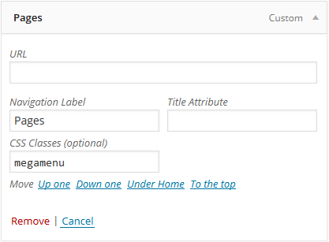

Let's start with installing and setting up your new theme.
Installation and activation
Automatic installation
-
Download "All Files and Documentation" package from Themeforest and unzip it.
-
In unzipped folder you will find quince.zip file. Do not unzip it one more time.
-
In your WordPress Dashboard navigate to Appearance > Themes.
-
Click on Add New Theme, click Upload Theme and browse the quince.zip file and click Install Now.
-
After installation is complete click on Activate Theme. Theme is now installed.
Manual installation
-
Download ZIP package from Themeforest and unzip it.
-
In unzipped folder you will find quince.zip file. Unzip it one more time.
-
Simply put unzipped theme folder into your wp-content/themes directory.
Setting up demo data
-
After theme is activated you will be navigated to Import Data section of the Theme Options.
-
Just click big green button to set everything up.
-
Voilà, everything is set up including pages, posts, menus, widgets and reading settings.
If you press Import Demo Data button once again later, it will not duplicate already existing content, which means that it is safe to do that. Menus are the only exception - menu items will be duplicated, even if they already exist.
Do not feel like importing demo data? No problem, here are steps for manually setting things up:
Setting home page
Go to Settings->Reading and select which page to be your home page and which to be the blog.
If you do not have any pages, create one called "Home" and one called "Blog", for example.
Importing demo content
If you want to make your website look similar to live preview, you can import Demo Content file.
To import demo content use Tools->Import->WordPress in your dashboard. Then browse the theme_data xml file in Demo_content/Theme_demo_data folder inside your download package.
To import widgets use Widget Importer and Exporter plugin; widget_data wie file is also located in Demo Content folder
Creating menus
To create menus for your navigation follow these steps:
-
In your WordPress Dashboard navigate to Appearance > Menus.
-
To create new menu enter a name for it and click Create Menu.
-
Now select pages you want to appear in menu and click Add to Menu.
-
Now when the pages are added to your menu drag them to change order as you like; to create sub menu just drag menu item slightly to the right and WordPress will place it as sub menu.
-
When ready click Save Menu.
-
Select Manage Locations tab and select your menu as Main Navigation and click Save.
Installing plugins
Once theme is activated you will see a following message:
-
Click begin installing plugins to install required plugins.
-
MNKY Theme Core Extend and WPBakery Visual Composer are required plugins. Hover over the plugin name and press Install button.
-
All other plugins are optional, you can install them when you want.
-
You can deactivate or remove any plugin later in classic Dashboard/Plugins section, as they will always be available to install again in Appearance/Install Plugins.
-
After required plugins are installed, just press Dismiss this notice button.
Here is a short description of each included plugin:
-
MNKY Theme Code Extent - plugins that adds theme functions to visual composer and theme itself. Is a required part of the theme.
-
WP Bakery Visual Composer - theme's page builder. Is a required part of the theme.
-
Envato Toolkit - allows Envato API powered theme updates with backup feature right from dashboard.
-
Revolution Slider - #1 slider plugin with amazing features.
-
Essential Grid - complete portfolio and grid building solution. Can be used for creating blog layouts, custom WooCommerce shop pages and much more.
-
Contact Form 7 - Contact form plug-in used in preview and pre-styled in theme.
If you plan to use bundled premium plugins in another theme, you have to purchase license on CodeCanyon. Links to plugin pages can be found in Appearance/Install Plugins by clicking on plugin name.
Theme options
Most settings of the theme are managed in Theme Options panel. It can be accessed in your dashboard under Appearance->Theme Options.
Settings are divided into categories and tabs for easier navigation. Commentaries describing option are present next to option itself. Take a little time to explore options and possibilities before starting other steps.
Our mega menu us super simple to use. Just create menu as you always do. If you want to turn it into mega menu, add class "megamenu" to the first level menu item.

Second level menu item will serve as column title and third level items as column content.
You can have from 2 to 6 columns. If you have 4 second level menu items, it means your mega menu will have 4 columns.
To hide column title add "hide-title" class to second level menu item:
If you do not have CSS Classes field, click Screen Options on top right of the Appearance/Menus page and enable it.
Page builder
Quince uses drag & drop page builder - Visual Composer - to create the content. You may already be familiar with it, but we will provide some explanation.
Full User Guide for WPBakery Visual Composer is located in Help Files folder.
Note that original user guide differs from theme's extended version in some cases. But you may still use it for reference in advanced cases.
Here is how it works:
In the Visual Composer editor mode you'll have "Add element" button, which you should click or drag to the working canvas, to add content block or row to your page.
Rows
Rows are used to divide your page into the logic blocks with columns, columns later will hold your content blocks. Rows can be divided into the layouts (eg. 1/2 + 1/2, 1/3 + 1/3 + 1/3, and so on). Your page can have unlimited number of rows. To change row's position, click and drag row's drag handler (top left row's corner) and drag row around (vertical axis).
Columns
Columns are part of the row and they hold your content elements inside them. Columns can be reordered. Click and drag column around (horizontal axis). That way you can group elements in logical groups and then drag them around with your mouse (to re-position).
Content Elements
Content Elements This is a list of available content elements that can be placed on the working canvas or inside of the columns. Think of them as bricks. With those bricks you are building your layout. Most of the content elements have options, to set them click pencil icon. To save changes click save button.
Here is how to use it in Quince:
-
Create a page and press Backend Editor button.
-
Click Add Element or Add Row (when you click add element it is placed automatically into the row).
-
On some elements setting screen pops up first, choose your settings and insert element (almost every setting has explanation under input field).
-
To edit element later click on pencil button.
-
Drag elements to reorder them.
Some specific element explanations:
Row Settings
Main Row (the one you get by pressing Add Row) has many settings available and serves as page section.
Click on pencil icon to edit the row:
-
First tab is general settings
-
You can choose full width content option, for example for sliders, full screen portfolio and other elements inside the row.
-
Paddings define section spacing from bottom and top.
-
Background tab
-
You can set background color or image for the row.
-
Once background image is set, additional settings will appear.
-
To enable "floating" effect while scrolling, set Fixed position for your background image.
-
Typography tab
-
You can choose some typography settings that will apply to all content in the row, unless it is overwritten by element or inline style.
-
Section ID
This settings is used when creating one page style website.
It is possible to add unique ID to each row. For example, add section ID "about-us" to the row. Then in Appearance/Menus create a link with URL #about-us. When you click this menu item, page will scroll to the section with about-us ID.
-
Responsive Options
Row has Responsive Settings tab. You can create specific content for chosen screen size.
For example, you want to display different content for the row on mobile devices starting with tablet portrait:
-
Hide the row from selected mobile devices.
-
Create another row and hide it from desktop and tablet landscape screen sizes.
-
As a result first row will be visible on Desktop and Tablet Landscape screen sizes and second row will be visible only on smaller screen sizes. It should look like this (notice the mobile icons):
Icon Panel
Icon panel is available for many elements, such as lists, buttons, separators and icon elements itself.
Just click Chose Icon button and select your desired icon for the element.
Page templates
Each of page templates can have different headers, sidebars and other settings. You can choose from available templates when creating a page.
Available page templates:
-
Full width template – page template with no sidebar.
-
Right sidebar template – page template with right sidebar.
-
Left sidebar template – page template with left sidebar.
-
Default template – used by plugins that create pages automatically. Should not be used with page builder.
Applying page template:
-
In your Edit Page (the page you get when you click Add New or edit existing page) section under Page Attributes in Template dropdown choose a template you need.
-
Now Update your page and template will be applied.
Blog and single post layout is managed under: Theme Options -> Blog & Posts
Theme allows selecting custom header element for every page, blog post, WooCommerce product and Essential Grid portfolio entry.
To select header for your page or post use Advanced Options located right under content editor.
-
Enable or Disable title area for the page.
If you decide to disable default title, you can add custom title to the page. Here are examples of custom titles (just copy one of them to your page in classic text mode, then swith back to backend editor)
Title with parallax background. (Replace row background image after copying)
[vc_row bg_image="1145" row_seperator="no-seperator" top="120px" bottom="120px" font_color="#ffffff" bg_color="#536477" bg_repeat="no-repeat" speed="0.20" bg_cover="cover" bg_attachment="fixed" parallax_bg="parallax-bg" textalign="center"][vc_column width="1/1"][vc_column_text]
<h1 style="font-size: 50px;"><span style="color: #ffffff;"><strong>TITLE WITH PARALLAX</strong></span></h1>
[/vc_column_text][/vc_column][/vc_row]
Title/subtitle + button
[vc_row row_seperator="no-seperator" top="70px" bottom="35px" textalign="right" speed="0.20"][vc_column width="2/3"][vc_column_text]
<h1 style="text-align: left; line-height: 1.4;"><strong>Custom Page Title</strong></h1>
<p style="text-align: left;"><span style="font-size: 15px; color: #999;">Create custom title styles for any of your pages.
You can disable and replace default title in page options.</span>
[/vc_column_text][/vc_column][vc_column width="1/3"][vc_empty_space height="51px"][vc_button title="Completely Customizable" size="btn-large" color="btn_themecolor" link="||"][/vc_column][/vc_row]
-
Add Pre-content area to your page, which will be placed right before the content. It supports any content and has integrated Revolution Slider choice. This section is especially handy for templates with sidebar.
Changes made in this section will not be seen when using page preview option; save the page for settings to take effect.
Post Formats
You can choose from various post formats. They are located in format tab when editing the post.
Formats available are:
-
Standard - featured image is not displayed in blog or single post, only post content is displayed.
-
Image - featured image is displayed when viewing blog and single post. You can also post external image link in Post Format Options (under editor text field and advanced options).
-
Gallery - attached image gallery slider displayed in blog and single post. Slider will use images attached to this post.
-
Video - embedded video is displayed in blog and single post. Add the video link to Post Format Options.
-
Audio - embedded audio is displayed in blog and single post. Add the audio link to Post Format Options or attach file to the post.
-
Status - a twitter-status like format for displaying post content.
-
Quote - format for displaying quotes. Use author as title and quote as text in editor.
-
Link - just post unformatted link to editor and save the post.
Post Format Option field examples:
You can see all post formats in demo content.
By default all pages with sidebar will have widgets you placed into in Page Sidebar and blog and posts uses Blog/Post sidebar.
-
To set custom sidebar in Custom Sidebar panel check Activate Custom Sidebar and choose which sidebar you would like to replace. It is located below content input field.
-
When you do so, a new sidebar for your page will be created in the Appearance>Widgets.
-
New sidebar will have the name of the page where it was created.
-
Just drag and drop widgets to your new sidebar.
Widgets are controlled in Appearance->Widgets. You just have to drag your widgets to widget area you want them to appear in.
Top Sidebar Right and Top Sidebar Left are enabled in Theme Options/Header/Top Bar.